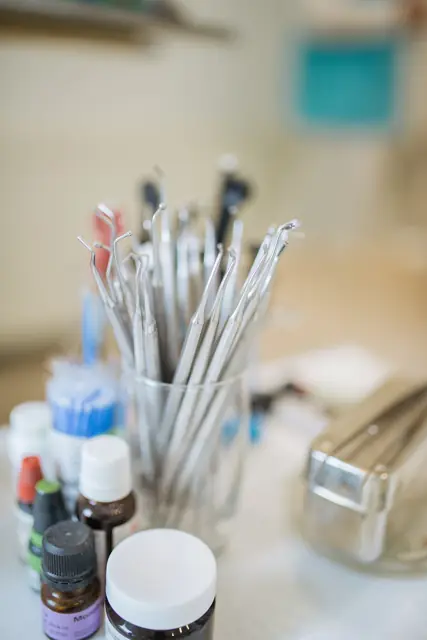

Cabinet dentaire à NabeulDr Ichrak Hammami · Médecin dentiste
Les réponses aux questions pratiques avant votre visite : rendez-vous, horaires, accès et documents à apporter.

Questions pratiques
Comment prendre rendez-vous ?
Par téléphone au +216 25 099 912, ou en envoyant le formulaire ci-dessous : il ouvre WhatsApp avec votre demande. Le cabinet vous confirme le jour et l'heure.
Quels sont les horaires ?
| Lundi | à confirmer |
| Mardi | à confirmer |
| Mercredi | jusqu'à 16h00 |
| Jeudi | à confirmer |
| Vendredi | à confirmer |
| Samedi | à confirmer |
| Dimanche | à confirmer |
Horaire relevé sur la fiche Google le 30/09/2026. Autres jours et horaires complets à confirmer avec l'établissement.
Où se trouve le cabinet ?
Nabeul (adresse exacte à confirmer)
Que faut-il apporter ?
Votre pièce d'identité, votre carte CNAM ou d'assurance si vous en avez une, et vos radiographies ou ordonnances récentes s'il y en a.
Le cabinet accepte-t-il la CNAM ?
Conventionnement CNAM et assurances : à confirmer. Posez la question au cabinet lors de la prise de rendez-vous.
Quelles langues sont parlées ?
Langues de consultation : à confirmer.
En cas de douleur ou d'urgence ?
Appelez d'abord le cabinet. En cas d'urgence vitale, composez le 190 (SAMU).
Le cabinet reçoit à Nabeul. L'adresse exacte et l'étage seront précisés ici après validation par le cabinet.